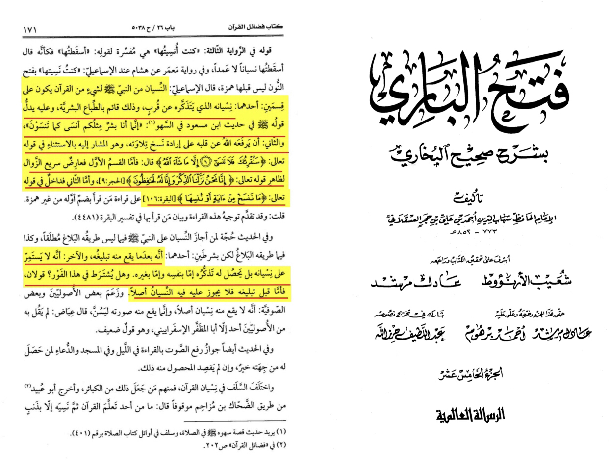

Translation: “the prophet forgetting Qūr’ān is on 2 types the first is a thing he forgets and remembers soonly
from the hadith of ibn mas’ud “I am a human like you so if I forget then make me remeber” and the second is what
has been abroagated (2:106) the first Type he remembers it quickly for Gods saying (15:9) and the other is under
the abroagated verses. There are 2 conditions for the first type one he delivers the verse first and that he doesn’t
continue on forgetting for a long time and it isn’t permissible that he forgets before delivering the verse”
-Source: Fathul bari Sharhu Sahih al-Bukhari (15/171)

If someone says how do you know he didn’t deliver a verse he forgot I tell him bring the source for that you took a presupposition
without no evidence my evidence is what I just sent